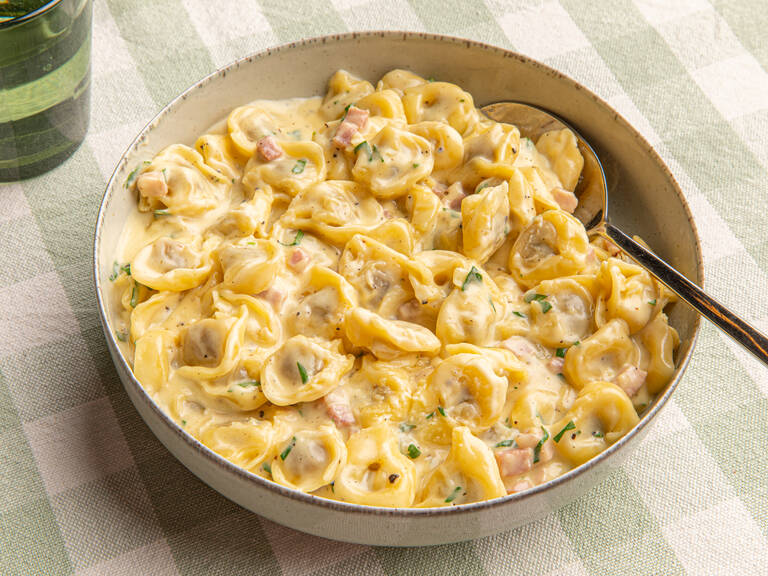

Tortellini Alla Panna

Description
A rich and creamy upgrade for store-bought tortellini that is quick to whip up and tastes restaurant-grade. Go for mushroom, meat, or spinach and ricotta tortellini, or if you don't have any, you can also use your favorite pasta shape, like tagliatelle or penne. For an even more rich, umami flavor, you can use pancetta or prosciutto instead of ham.
Ingredients
- tortellini
- ham
- Parmesan cheese
- vegetable oil
- vegetable broth
- cream
- egg yolks
- ground nutmeg
- pepper
- salt
- parsley (for serving)
Steps
- Dice ham and finely grate Parmesan cheese. Bring a pot of water to boil over high heat. Season generously with salt and cook tortellini according to the package instructions.
- In a large frying pan, add oil and diced ham. Fry briefly, then deglaze with vegetable stock and cream and let simmer for approx. 5 min.
- Season the sauce with pepper and nutmeg. Add cooked tortellini to the sauce and let simmer for approx. 1 min. Remove pan from the heat and stir in the Parmesan cheese and egg yolks. Return the stove to heat over low heat, until the tortellini are coated with creamy sauce. Season to taste with salt and serve with fresh parsley, if desired. Enjoy!